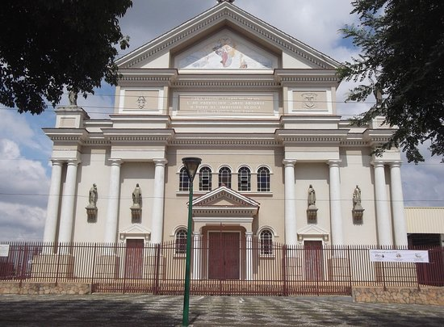
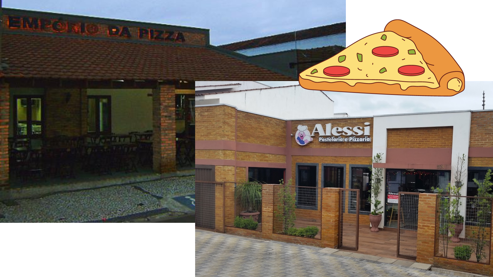

Paróquia Santo Antônio
Caso você esteja buscando um contato espiritual com o divino, seja apenas um estudioso de possíveis casos investigativos paranormais com criaturas interdimensionais de nomes impronunciáveis ou apenas queira visitar uma matriz lindona, com vários vitrais maneiros de mosaicos coloridos. Acompanhada por uma linda praça, com grandes árvores e uma arquitetura única imbituvense. Além do fato de ser um dos poucos lugares de Imbituva onde se encontram 3 Pokestops.
A Paróquia Santo Antônio fica na Rua Joaquim Marcondes Pupo, 209 - Centro
CTG Cupim
Se você conseguiu abrir um link na url de um navegador e entender o que eu acabei de falar, provavelmente você não é de Agro. Entretanto, um aventureiro necessita conhecer até os lugares que ele não gosta. E esse CTG pode ser para você também. Você pode ter aulas de dança gaúcha, andar de bike pelas trilhas e matagais e, se der sorte, assistir um rodeio de 6 horas de duração (o que é maravilhoso).
O CTG Cupim fica na Rua Santos Dumont, S/N, Centro
BSOFT
A Bsoft é uma empresa de desenvolvimento de software para gestão de transporte rodoviário de cargas. Ela é extremamente reconhecida, nacionalmente, pelo seu rápido crescimento e inovação, além da boa qualidade de trabalho e gestão de pessoas dentro da empresa. Ela é muito cobiçada pelos Senhores Informáticas e, principalmente, alunos do IF. Ela tem sedes em outros lugares, mas foi aqui em Imbituva que a empresa nasceu. Chupa essa
A unidade 1 da Bsoft de Imbituva fica na Rua Padre Tomás Kania, 511. Já a unidade 2 fica na Avenida Centenário, 1345.
As Pizzarias
Imbituva também é conhecida, mundialmente, pelo seu ramo de pizzarias de qualidade. Estabelecimentos como Empório da Pizza ou Alessi Pizzaria já foram até comparados com gigantes mundiais no ramo da pizza. Em 2006, a revista Rolling Stones publicou um artigo que mostrava um rank das melhores pizzarias de todo o mundo (com excessão de Coréia do Norte e Macedônia do Norte). O Empório da Pizza ficou entre as 5 melhores do mundo, superando marcas como: Domino's; Subway; Aurora e a própria Pizzaria Alessi, que acabou ocupando o 12° lugar. Se você busca uma cidade um pouco entediante, mas com uma boa pizza e uma boa cerveja, para curtir na night, dê um passo e venha visitar Imbituva.
